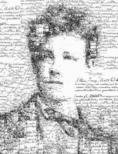

Tu es branchée littéraire !

Français, langues étrangères... Tu es attirée par la littérature, les beaux textes, la culture. Tu pourrais t'orienter vers l’enseignement ou la traduction, à moins que tu n'appliques tes connaissances à l’entreprise.

Des artistes chouettes

Salvador Dali
"Ne craignez pas la perfection. Vous n'y parviendrez jamais."
Salvador Dali
Salvador Dali
Salvador Felipe Jacinto Dali est né à Figueras (Espagne) en 1904. De 1921 à 1925, il fait ses études à l’Académie San Fernando de Madrid ; il s’y lie d'amitié avec le poète Federico García Lorca et le cinéaste Luis Buñuel. Sa première exposition personnelle est organisée en 1925 (Galerie Dalmau, Barcelone), exposition à l’occasion de laquelle Picasso et Miro commenceront à s’intéresser à ses travaux.
Dali est d'abord influencé par le futurisme, puis par le cubisme (1925). En avril 1926, Dali fait son premier voyage à Paris, où il rend visite à Picasso. Lors d’un second voyage à Paris en 1929, à l’occasion du tournage du film de Buñuel « Un chien andalou » (Dali est co-scénariste), Miro l’introduit dans le groupe surréaliste.
Dali rencontre André Breton et . . . Gala, sa future femme et égérie (Gala est alors l’épouse de Paul Eluard). Il adhère au groupe surréaliste en 1929. Dali s’intéresse alors aux théories psychanalytiques de Freud et met au point sa méthode « paranoïaque-critique ». Il peint, dans cette période, des espaces oniriques et fantasmatiques peuplés d’éléments symboliques : montres molles, béquilles, animaux fantastiques, personnages distordus.
Dali participera encore aux manifestations et expositions surréalistes après son exclusion de 1934. Dali réinterprète des oeuvres célèbres, comme l’Angélus de Millet, dont il donne plusieurs versions. Breton le surnomme « Avida Dollars » !
Dali est d'abord influencé par le futurisme, puis par le cubisme (1925). En avril 1926, Dali fait son premier voyage à Paris, où il rend visite à Picasso. Lors d’un second voyage à Paris en 1929, à l’occasion du tournage du film de Buñuel « Un chien andalou » (Dali est co-scénariste), Miro l’introduit dans le groupe surréaliste.
Dali rencontre André Breton et . . . Gala, sa future femme et égérie (Gala est alors l’épouse de Paul Eluard). Il adhère au groupe surréaliste en 1929. Dali s’intéresse alors aux théories psychanalytiques de Freud et met au point sa méthode « paranoïaque-critique ». Il peint, dans cette période, des espaces oniriques et fantasmatiques peuplés d’éléments symboliques : montres molles, béquilles, animaux fantastiques, personnages distordus.
Dali participera encore aux manifestations et expositions surréalistes après son exclusion de 1934. Dali réinterprète des oeuvres célèbres, comme l’Angélus de Millet, dont il donne plusieurs versions. Breton le surnomme « Avida Dollars » !

Arthur Rimbaud
"“On n'est pas sérieux, quand on a dix-sept ans.”"
Arthur Rimbaud
Arthur Rimbaud
Né à Charleville-Mézières le 20/10/1854 ; Mort à Marseille le 10/11/1891
Arthur Rimbaud est LE poète par excellence. Enfant précoce et élève brillant, il remporte des prix de littérature dès son adolescence. Jeune homme révolté contre l’ordre des choses, il voit la poésie comme un moyen de les faire évoluer. Son abandon de la poésie à partir de dix-neuf ans est pour certains l’aveu de cet échec. D’autres pensent que c’est simplement pour gagner sa vie qu’il arrêta d’écrire et se tourna vers le commerce. Le poète du Bateau ivre a eu une vie mouvementée faite de fugues, de vie de bohème, d’errance et de voyages.Verlaine, à qui Rimbaud a envoyé ses écrits, est touché par les vers du jeune homme et l’invite à Paris : "Venez, chère grande âme, on vous appelle, on vous attend". Rimbaud s’y rend aussitôt, emportant avec lui son poème Le bateau ivre. S'en suivront deux années d'errance et de vagabondage. Ils vivront à Paris chez Verlaine (lui-même étant marié et vivant en ménage) et mèneront une vie de bohème en fréquentant les bars du quartier Latin. Puis, les deux amants passeront par Bruxelles et Londres. Leur liaison s’achèvera violemment. Le 8 juillet 1873, Verlaine et Rimbaud se disputent et décident de se séparer. Verlaine, en état d’ébriété, tire sur Rimbaud et le blesse. Verlaine sera condamné par la justice belge à deux ans de prison. Peu après, Rimbaud achève et publie Une saison en enfer.
Arthur Rimbaud est LE poète par excellence. Enfant précoce et élève brillant, il remporte des prix de littérature dès son adolescence. Jeune homme révolté contre l’ordre des choses, il voit la poésie comme un moyen de les faire évoluer. Son abandon de la poésie à partir de dix-neuf ans est pour certains l’aveu de cet échec. D’autres pensent que c’est simplement pour gagner sa vie qu’il arrêta d’écrire et se tourna vers le commerce. Le poète du Bateau ivre a eu une vie mouvementée faite de fugues, de vie de bohème, d’errance et de voyages.Verlaine, à qui Rimbaud a envoyé ses écrits, est touché par les vers du jeune homme et l’invite à Paris : "Venez, chère grande âme, on vous appelle, on vous attend". Rimbaud s’y rend aussitôt, emportant avec lui son poème Le bateau ivre. S'en suivront deux années d'errance et de vagabondage. Ils vivront à Paris chez Verlaine (lui-même étant marié et vivant en ménage) et mèneront une vie de bohème en fréquentant les bars du quartier Latin. Puis, les deux amants passeront par Bruxelles et Londres. Leur liaison s’achèvera violemment. Le 8 juillet 1873, Verlaine et Rimbaud se disputent et décident de se séparer. Verlaine, en état d’ébriété, tire sur Rimbaud et le blesse. Verlaine sera condamné par la justice belge à deux ans de prison. Peu après, Rimbaud achève et publie Une saison en enfer.
Ceci est un site créé dans le cadre de l'option ISN en 2051-2016 au Lycée PGDG !